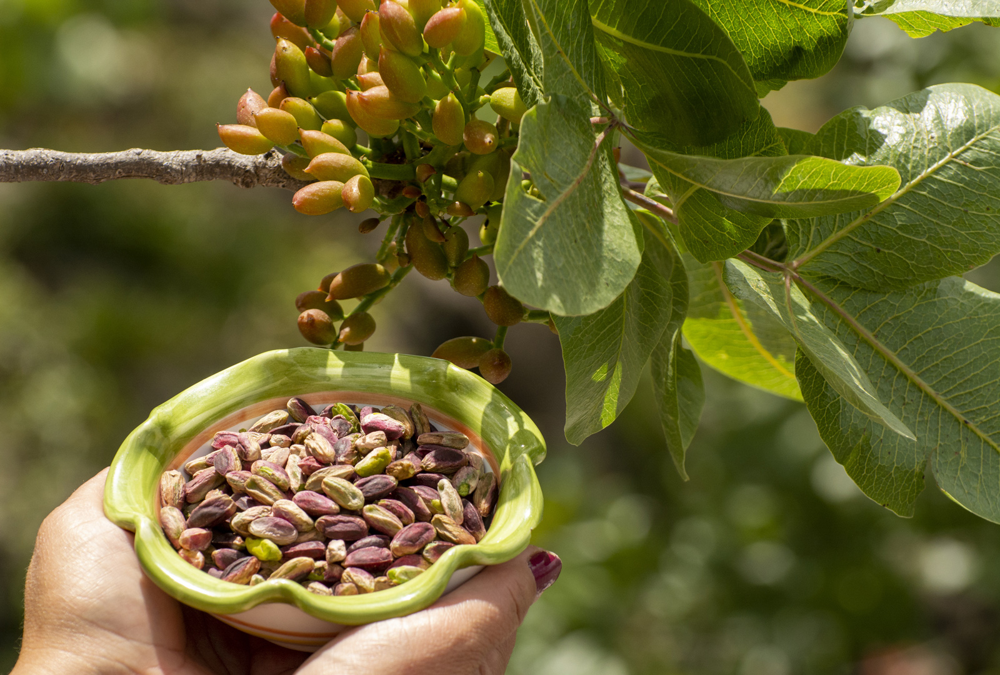
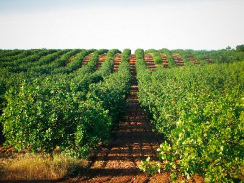

El pistacho (Pistacia vera) es uno de los frutos secos más antiguos del mundo. Su origen se sitúa en Asia Central y Oriente Medio, donde se ha cultivado desde hace miles de años. Los pistachos eran altamente valorados por civilizaciones antiguas como los persas y los babilonios, quienes apreciaban sus propiedades nutricionales y su capacidad para conservarse durante largos períodos.
La historia del pistacho se entrelaza con la historia del comercio y la expansión de las rutas comerciales. En la antigüedad, los pistachos eran transportados a través de la Ruta de la Seda, llegando a Europa y otros rincones del mundo. Fueron introducidos en el Mediterráneo por los romanos y se convirtieron en un manjar popular en la región.
Los pistachos son una excelente fuente de nutrientes, proporcionando una variedad de beneficios para la salud:
El cultivo del pistacho requiere condiciones climáticas específicas. Los árboles de pistacho prosperan en regiones con veranos largos y calurosos e inviernos fríos. Estas condiciones permiten que los frutos maduren correctamente y desarrollen su característico sabor y textura.
El proceso de cultivo del pistacho es lento y requiere paciencia. Los árboles de pistacho pueden tardar entre 5 y 7 años en comenzar a producir frutos y alcanzan su máxima producción después de unos 15 años. Sin embargo, una vez establecidos, los árboles pueden producir frutos durante décadas.
El riego y la gestión del suelo son cruciales para el éxito del cultivo. Los pistacheros necesitan un suelo bien drenado y un riego adecuado para evitar el estrés hídrico. Además, la polinización es un factor clave; los árboles de pistacho son dioicos, lo que significa que hay árboles masculinos y femeninos, y se necesita una proporción adecuada de ambos para una polinización efectiva.
Los pistachos son extremadamente versátiles en la cocina y se utilizan en una amplia variedad de platos, tanto dulces como salados. Aquí hay algunos ejemplos de cómo se pueden usar los pistachos en la cocina:
Integrantes del equipo 6